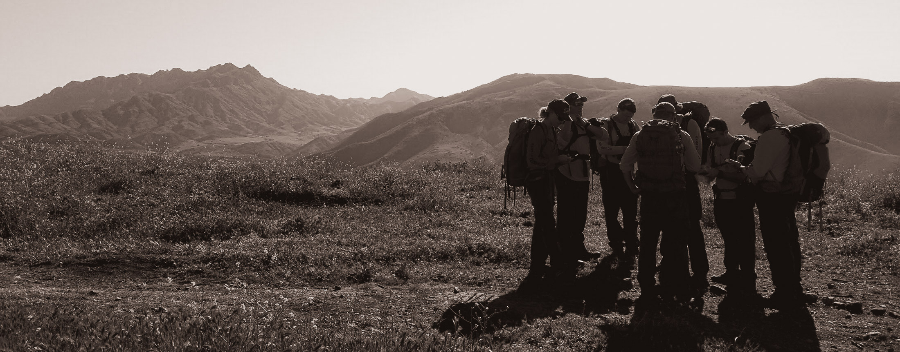
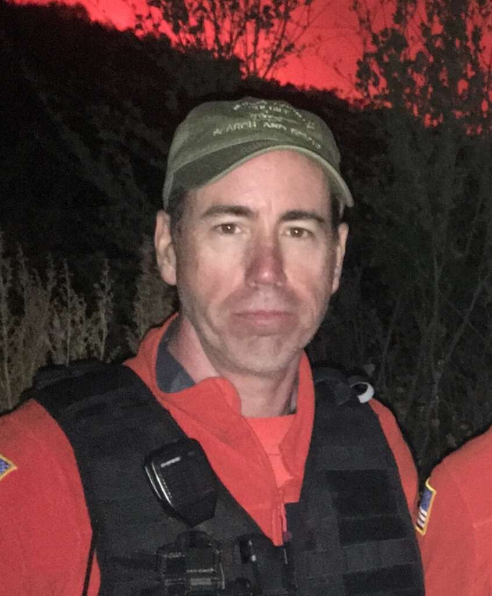
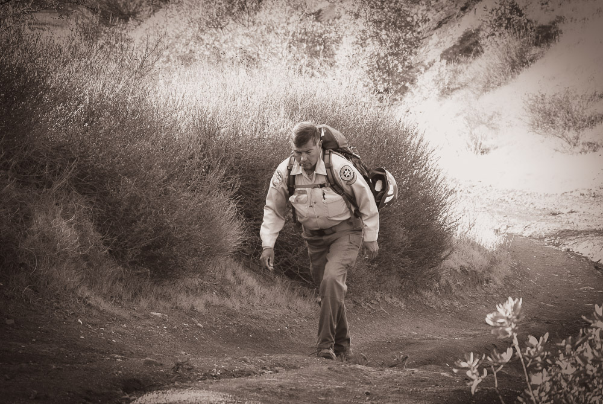
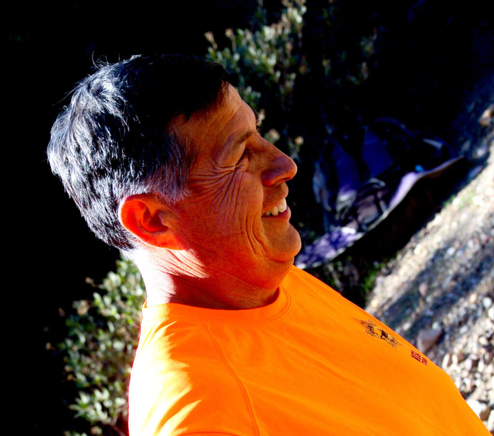

Gone but not forgotten — a tribute to some of our former team members of note.

In MemoriamFebruary 2, 2019
Jef Dye was a dedicated member of VCSAR Team 1 who tragically lost his life on February 2, 2019. While en route to Mt. Pinos for a winter training operation, the team stopped to assist victims of a rollover accident on Interstate 5 near Pyramid Lake. While providing medical assistance to the victims, Jef and several other team members were struck by an out-of-control vehicle.
Jef grew up in Fillmore and graduated from Fillmore High School in 1986. He went on to earn an Associate Degree in Criminology and a Bachelor of Science Degree in Computer Science. Jef began his professional career as an Investigative Assistant with the Ventura County District Attorney's Office. He later specialized in Digital Forensics and Cybercrime, working for General Dynamics, PricewaterhouseCoopers, and Bank of America, where he served as Vice President of Global Information Security.
Jef was deeply devoted to his family and spent most Sundays visiting and helping his parents, demonstrating the same kindness and commitment that defined his life and career.
Joe Martinez dedicated over 30 years of his life to the Fillmore Search and Rescue Team, a highly skilled volunteer unit within the Ventura County Sheriff's Office. Throughout his tenure, Joe played a crucial role in numerous rescue operations, demonstrating exceptional bravery and commitment to public service.
His extensive knowledge of the Los Padres National Forest made him an invaluable asset to the team. Joe's dedication and selflessness have left a lasting impact on the community, inspiring many to follow in his footsteps and serve with the same level of passion and integrity.


The best way to honor those who served is to answer the call yourself.
Become a Volunteer →